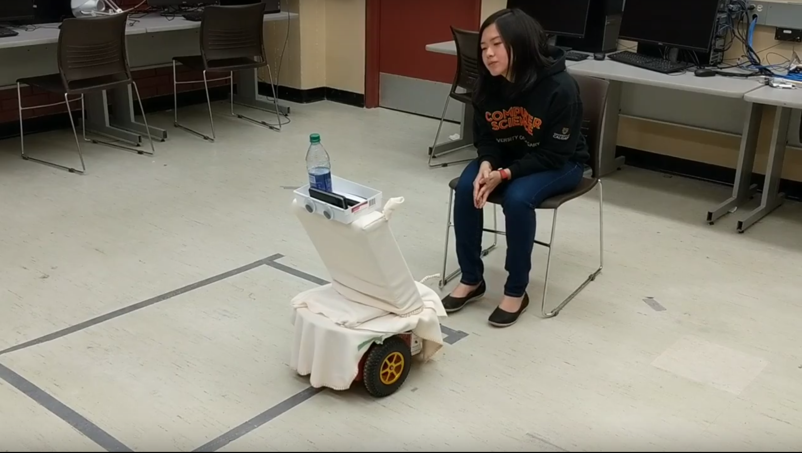

In this project, we look at how we can develop a robot whose primary focus is to provide a positive interaction with a senior in addition to providing services that would enable the senior to be independent. To achieve this, we propose using a Pioneer P3-DX and building various functionality to make this robot a companion to seniors in their own homes. We will look not only to achieve a need but research how robotics companies going forward can place more of an emphasis on the interaction of robots with seniors, possibly allowing them to be incorporated into our society and fulfill a very demanding need.
The number of elderly people are rapidly growing as the baby boomer population is maturing. As such, the need for health care providers is increasing, but the resources available are not growing as quickly. Falls are one of the main causes of mortality, immobility, and early nursing home placement in the elderly. The combination of high incidence of falls, high susceptibility to injury, and occurrence of clinical diseases can make even a mild fall dangerous for the elderly. Falls often cause healthy independent elderly people to lose mobility and require constant care. Hence, it is very important that elderly people who have fallen receive immediate care so that they can be treated and so have minimal effects on their later quality of life. Thus, getting them immediate help when they are on their own and have fallen, without compromising their privacy and independence, is an important problem for improving the lives of the elderly.
While looking into the field of senior care with robots we discovered the following existing robots that offer different types of support to the elderly or infirm.
These robots all fulfill particular purposes that may be very useful to elderly living in their homes. In particular, we found medication and mobility assistance particularly interesting methods through which to create meaningful interaction, and robots that can help with daily tasks and in improving an elderly person’s social interaction.
One of the main objectives of our robot is to assist elderly people when they experience a fall. This will involve providing a level of effective support and a means to escalate the matter further by contacting an emergency contact that has been previously set up by the user. Our ultimate goal is not to simply create a single purpose robot but an entity that that allows elderly people to live on their own and feel safe in case of emergencies. An important note is that while aiming to achieve this, we want to explore on the depth of each deceptively simple human-robot interaction to give the user the best possible experience with our robot -- so they feel safe and independent. With Bettybot, our goal is to help make seniors’ lives better without forcing them to become dependant on a senior home or a personal aid worker. We aim to create a robotic entity that can fulfill specific needs of the elderly, and also one that elderly people can feel comfortable around. Some nice to have (optional) features that the team is hoping to implement includes:
The ARIA SDK is integrated with the Pioneer robot, and runs the robot navigation functionality which is controlled by one of us. A python script then runs that responds to the Google Home, which is set atop the Pioneer, and deals with the voice interaction. A phone accelerometer has been hooked up with IFTTT (If This Then That) in order to notify a Dropbox server that a fall has occurred, which activates that python script. Physical movements that are programmed need to override the user-controlled movements.
Prerequisites:
Have a Windows OS, Pioneer 3DX robot, IFTT, accelerometer (in phone) and a Google Home. Code can
be found here.
This is a group project made in University of Calgary's Human Robotic Interactions class of Winter 2018. Team members include Brendan Dueck, Hadiya Firdaus, Edrienne Manalastas and myself.